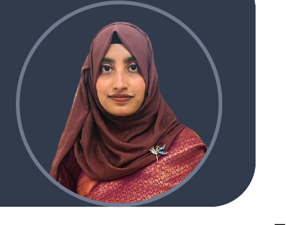

Peer-reviewed publicationNLP · BERT-CNN · sentiment analysis
Educational Technology & Engineering
Learning design with evidence behind it.
I turn learning problems into systems people can use.
I’m Mahmuda Ferdusi. My work brings together curriculum, educational technology, research, data, training, and community programs — from understanding a learning need to testing what actually improves the experience.
01 Research
02 Curriculum
03 Data
04 Training
EDTECH PROFILE / MF-01
ACTIVE

Research signalEvidence → decision
Design signalNeed → experience
Participants engagedHult Prize campus leadership
Community reachInformation & education initiatives
Applied EdTech researchResearch assistant experience
01 / ABOUT
Not technology for technology’s sake.
My strongest work sits where learner needs, content, evidence, and delivery meet. That means researching the problem first, structuring the learning experience carefully, and using technology as part of the solution rather than the whole solution.
MY EDTECH PRACTICE
I work across the full learning loop — from finding the gap to documenting what changed.
My experience includes educational technology research, curriculum and content design, field-data collection and analysis, research documentation, training facilitation, program monitoring and evaluation, event coordination, and community engagement.
That mix lets me move between academic research and practical delivery: asking better questions, organizing content, working with people, and turning findings into something a team can act on.
Educational TechnologyLearning DesignCurriculumResearchProgram EvaluationNLPData AnalysisTrainingCommunity Education
A
WHEN THE QUESTION IS UNCLEAR
I investigate.
Field data, literature, needs, context, documentation, and the evidence behind a decision.
B
WHEN THE LEARNING IS UNSTRUCTURED
I design.
Objectives, curriculum flow, content, activities, assessment, and the learner journey between them.
C
WHEN THE PLAN MEETS PEOPLE
I coordinate.
Training, outreach, facilitation, communication, event operations, and program documentation.
02 / DESIGN LAB
A learning problem should leave the room with a plan.
This interactive workflow shows how I frame an EdTech project: understand the learning need, decide what should change, build the experience, support delivery, then evaluate the result.
INPUT
01 / ANALYZE
Start with the learner, not the tool.
Clarify who the learners are, what is getting in their way, what evidence already exists, and what success should look like before choosing content or technology.
OUTPUTNeeds assessment · learner profile · problem statement
03 / EXPERIENCE
Research desk, training room, event floor.
My experience is not confined to one kind of EdTech work. I have contributed to research, youth-development programs, documentation, campus events, and education-focused community activity.
UNIVERSITY OF FRONTIER TECHNOLOGY, BANGLADESH
Research Assistant — Educational Technology Innovation Project
- Contributed to applied EdTech research, curriculum design frameworks, and program-evaluation methods.
- Collected, cleaned, and analyzed field data used to support program-improvement decisions.
- Prepared research reports, progress documentation, and technical write-ups aligned with academic standards.
- Worked with faculty supervisors and interdisciplinary team members to deliver project milestones.
BANGLADESH YOUTH SKILLS DEVELOPMENT ORGANIZATION
Intern — Career Development & Research Department
- Supported planning and delivery of youth career-development and vocational-skills programs.
- Managed program documentation, activity monitoring, and outcome reporting.
- Contributed to stakeholder meetings and community-awareness campaigns.
HULT PRIZE UFTB · 2024
Head of Media and Documentation
- Led media and documentation work for the university-level Hult Prize competition.
- Coordinated promotional communication, event coverage, and documentation for 100+ participants.
- Produced post-event reporting and institutional records for the competition.
BADHAN · UFTB UNIT
Secretary — Information and Education Affairs
- Managed information dissemination and educational-awareness activities for a university community of 1,000+ members.
- Organized seminars, workshops, and educational events around literacy, health awareness, and community welfare.
- Maintained member records and regular activity reports for unit leadership.
04 / RESEARCH
From war discourse to topic-level sentiment.
I co-authored a peer-reviewed study using a hybrid BERT-CNN approach to examine topic-wise sentiment in social-media discourse about the Russia-Ukraine war.
PEER-REVIEWED PUBLICATION
Words of War: A Hybrid BERT-CNN Approach for Topic-Wise Sentiment Analysis on the Russia-Ukraine War
The work combines contextual language representation with convolutional feature extraction to support topic-wise sentiment analysis. My contribution reflects hands-on experience with NLP methodology, model evaluation, and academic writing.
MODEL FLOW / LIVE DIAGRAM
01Textsocial discourse
→
02BERTcontextual representation
→
03CNNfeature extraction
→
04Sentimenttopic-wise output
05 / SKILLS
One toolkit, three kinds of work.
The practical overlap matters: research shapes the design, design shapes delivery, and delivery creates the evidence needed for the next iteration.
01
Research & Analysis
Turning field information into something structured enough to support a decision.
02
Learning & Content
Building the structure around what learners need to understand, practice, and apply.
03
Technical & Productivity
Tools for documentation, analysis, presentation, programming, and digital work.
LEADERSHIP•TEAM COLLABORATION•PROJECT MANAGEMENT•PROBLEM SOLVING•TIME MANAGEMENT•COMMUNICATION•
LEADERSHIP•TEAM COLLABORATION•PROJECT MANAGEMENT•PROBLEM SOLVING•TIME MANAGEMENT•COMMUNICATION•
06 / EDUCATION & TRAINING
The academic foundation — and the learning around it.
My formal study is in Educational Technology & Engineering, supported by training in digital literacy, employability, cybersecurity, and related development programs.
2020 — Present
B.Sc. (Hons), Educational Technology & Engineering
University of Frontier Technology, Bangladesh
2020
Higher Secondary Certificate
Rajshahi Government Women’s College · GPA 5.00 / 5.00
2018
Secondary School Certificate
Masjid Mission Academy, Rajshahi · GPA 5.00 / 5.00
CERTIFICATIONS & TRAINING
Digital Literacy Course for Youth
Wadhwani Employability Skills Program
Cyber Security Training · Creative IT Institute
HP LIFE · IT for Business Success
Environment Olympiad
Green Earth Quest
LanguagesBangla · NativeEnglish · FluentHindi · Basic
07 / CONTACT
If the work involves learning, research, or people — I’m interested.
For educational technology, curriculum and content work, research collaboration, training, program evaluation, or related opportunities, the links here go directly to me.
mahmudaferdusi53@gmail.com ↗